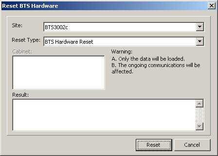

This describes how to reset the hardware of a BTS.
Prerequisites
- The LMT runs normally.
- The communication between the LMT and the BSC is normal.
- The communication between the BSC and the BTS is normal.
Context
Resetting hardware of a BTS is also called power-off resetting.
The method for resetting different hardware is similar. This topic takes Reset BTS Hardware of the BTS3002C as an example.
Procedure
- Through GUI
- Choose . A dialog box is displayed, as shown in Figure 1.
Figure 1 Reset BTS Hardware dialog box

- Set Site and Reset Type, and then click Reset.
- Through MML
- You can run the following commands on the LMT to reset the BTS hardware.
- Run the RST BTSHW command to reset the BTS hardware.
Copyright © Huawei Technologies Co., Ltd.